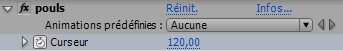

Avant de commencer ce tuto, je vais vous parler du logiciel After Effects que vous ne connaissez peut-être pas.
After Effects est un logiciel de compositing édité par Adobe. C'est un nom barbare et très général qui ne doit pas vous évoquer grand-chose... :-°
Concrètement, ce logiciel permet de faire des effets spéciaux, mais aussi du motion design (graphisme animé).
Il n'est pas rare d'utiliser After en parallèle avec d'autres logiciels d'Adobe que vous connaissez sans doute comme Photoshop ou Illustrator et même Flash.
Mais revenons à nos moutons, l'objectif de ce tutoriel est d'apprendre à créer un graphique (courbe) animé, comme on peut en voir dans la série Dr House sous forme de cardiogramme.
Sans plus attendre, voici la vidéo finale de ce tutoriel (pour vous mettre l'eau à la bouche ^^) :
Dans cette première étape, nous allons créer des éléments qui vont nous permettre de construire une courbe comme celle que vous avez pu voir dans la vidéo (un peu comme de légos).
Créez une nouvelle composition de taille 100*150 (nommez là pic1), et placez-y un nouveau calque d'effet (Calque > Créer > Calque d'effets).
Sélectionnez l'outil plume et dessinez un pic dans le calque d'effets, qui pourrait avoir à peu près cette allure :
Un trait, histoire de meubler
Il ne reste plus qu'à appliquer l'effet trait à notre calque d'effets (Effet > Génération > Trait), avec ces paramètres :
Nous disposons maintenant d'une portion de courbe, vous pouvez en créer d'autres comme une portion plate comme celle-ci :
Le cardiogramme, c'est juste une composition dans laquelle on va assembler nos éléments (pics, plats) pour former une courbe. Cette composition doit être un peu plus large que la composition finale.
Créez une nouvelle composition de 900*360 que vous nommerez cardiogramme.
Il ne reste plus qu'à y placer les éléments que nous venons de créer (un pic - un plat - un pic...) :
Attention, on arrive au premier point intéressant de ce tuto (l'autre c'est l'étape 4 ^^ ). C'est le moment de créer notre composition finale, de 640*360 !
Placez-y le cardiogramme et créez un nouveau solide blanc de la taille de la compo (640*360 pour ceux qui ont la mémoire courte).
Le pitch
Ce que nous allons faire, c'est afficher notre solide blanc à travers le calque cardiogramme. Dans le jargon on appelle ça un cache luminance.
Après il ne restera plus qu'à déplacer le solide de gauche vers la droite pour que le graphique donne l'impression de se tracer de lui même, comme sur un oscilloscope !
Pour cela il est vous devez positionner le cardiogramme au dessus du solide dans la timeline. Ensuite il faut cliquer sur la liste déroulante dans la colonne cache, et choisir Luminance cardiogramme.
Bon OK c'est pas clair du tout, alors je sors un petit screenshot :
Colour, like no other
Vous pouvez ajouter un effet glow à la courbe (Effet > Estétique > Lueur diffus) au calque cardiogramme, et changer la couleur de la courbe en appliquant Effet > Génération > Remplir au solide.
Dernière étape de ce tuto, nous allons afficher un nombre (dans le cas présent, le pouls), parce que ça fait plus pro, parce que c'est cool !
Bon là encore on pourrait se contenter d'écrire un nombre au pif dans un calque texte, mais ça le fait pas trop. Et puis c'est trop simple aussi, non ?
Ce que nous allons faire, c'est animer le texte de ce compteur à l'aide d'une glissière (qui va permettre de faire évoluer le pouls en fonction du temps). On va aussi faire osciller cette valeur de quelques unités à intervalle régulier pour que ça soit plus réaliste.
Glissière
Créez un nouveau calque texte (outil texte) et tapez un nombre au hasard. Choisissez une police sans-sérif (Arial Bold 36px) et utilisez la même couleur que votre courbe.
Ajoutez-lui une glissière (Effet > Options pour expressions > Paramètre glissière), et renommez-le "pouls" :

C'est cette glissière qui va contrôler le pouls, vous pouvez animer ce paramètre pour faire varier le pouls en fonction du temps.
Expression
Nous allons maintenant ajouter une expression sur le paramètre Texte source du calque texte (Alt + clic sur le petit chronomètre). Le rôle de cette expression est d'ajouter une sorte de bruit, la valeur du pouls va varier de quelques unités en fonction du temps.
duree = 0.4
graine = Math.floor(time/duree)
seedRandom(graine, true)
vario = Math.floor(random(-2,2))
val = Math.floor(effect("pouls")("Curseur")) + vario
text.sourceText = val
Ben oui, je ne pouvais pas vous lâcher comme ça voyons !
Il manque un détail essentiel : le quadrillage (oui je vous assure, ça fait toute la différence).
Cette étape n'est pas très compliquée, créez un nouveau solide noir de la taille de votre compo finale (640*360, toujours pour ceux qui ont la mémoire courte), et appliquez-lui l'effet grille (Effet > Génétation > Grille). Utilisez ces paramètres :
Voilà, ce tuto est terminé et j'espère qu'il vous a aidé. Vous pouvez ajouter d'autres courbes comme sur la vidéo de démonstration, ou même ajouter des unités aux compteurs.